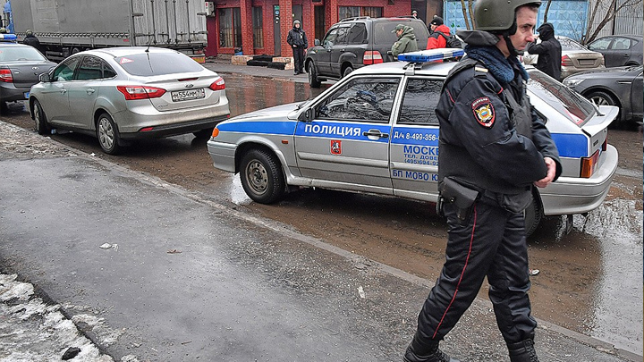

Понятие объекта преступления
Современные представления о содержании понятия «объект преступления» можно разделить на три основных направления.
1) Определение объекта преступления через потерпевшего. Объект преступления — это тот, в отношении кого (или против кого) совершается преступление, то есть отдельные лица или какое-то множество лиц, материальные или нематериальные ценности которых, будучи поставленными под уголовно-правовую охрану, подвергаются преступному воздействию, в результате чего этим лицам причиняется или создается угроза причинения вреда. Данный подход не учитывает, что не во всех преступлениях вред причиняется именно личности или множеству лиц (например, в экологических преступлениях).
2) Определение объекта преступления через права, интересы и блага. Объект преступления — это права, интересы и блага, на которые посягает преступник. Данный подход не учитывает, что некоторые деяния наказуемы, даже если потерпевший не заявляет о нарушении своих прав (например, если совершеннолетний вступает в половое сношение с лицом, не достигшим возраста 16 лет, при наличии согласия этого лица; аналогично с убийством из сострадания).
3) Определение объекта через общественные отношения — общепринятый подход.
ЦИТАТА
Объект преступления в уголовном праве — это то, на что посягает преступное деяние, т.е. общественные отношения, находящиеся под защитой уголовного закона, которым причиняется вред или создается реальная угроза причинения вреда.
Объекты уголовно-правовой охраны перечислены в ч. 1 ст. 2 УК РФ: права и свободы человека и гражданина, отношения собственности, отношения общественного порядка и общественной безопасности, охрана окружающей среды, конституционный строй Российской Федерации, обеспечение мира и безопасности человечества.
Объект преступления является неотъемлемым элементом каждого преступного посягательства, поэтому выявление объекта преступления принципиально важно для правильной квалификации деяния. Отсутствие объекта исключает уголовную ответственность, так как отсутствует один из элементов состава преступления. Например, убийство (ст. 105 УК РФ) и умышленное причинение тяжкого вреда здоровью, повлекшего по неосторожности смерть потерпевшего (ч. 4 ст. 111 УК РФ), различаются именно объектом преступления: в первом случае им является жизнь человека (преступник стремился именно лишить жизни потерпевшего), во втором — здоровье потерпевшего (преступник стремился причинить вред здоровью потерпевшего, но не стремился убить).
Виды объектов преступления
Выделяют следующие виды объектов преступления:
1. общий — общественные отношения, охраняемые уголовным законом от преступных посягательств: охрану прав и свобод человека и гражданина, собственности, общественного порядка и общественной безопасности, окружающей среды, конституционного строя Российской Федерации, обеспечение мира и безопасности человечества;
2. родовой (специальный) — группа однородных общественных отношений внутри общего объекта. Родовые объекты указаны в названиях разделов Особенной части УК РФ: интересы личности, интересы государственной власти и т. п.;
3. видовой — совокупность тождественных общественных отношений одного вида внутри родового объекта. Видовые объекты указаны в названиях глав Особенной части УК РФ. Так, родовым объектом преступлений, расположенных в разделе VII, является личность, а видовым объектом – жизнь и здоровье (глава 16), свобода, честь и достоинство личности (глава 17), половая неприкосновенность и половая свобода (глава 18), конституционные права и свободы человека и гражданина (глава 19), семья и несовершеннолетние (ст. 20). Видовой объект может совпадать с родовым: так, раздел XI «Преступления против военной службы», раздел XII «Преступления против мира и безопасности человечества» включают в себя по одной главе, которые по названию совпадают с наименованием самого раздела;
4. непосредственный объект — часть видового объекта, обозначающая конкретное общественное отношение, против которого направлено преступное посягательство. Непосредственные объекты указаны в названиях статей Особенной части УК РФ (например, умышленное причинение вреда здоровью различной степени тяжести (ст. 111, 112, 115 УК РФ), изнасилование (ст. 131 УК РФ) и т.п.). В некоторых диспозициях уголовно-правовых норм законодателем дается описание объективных и субъективных признаков деяния, либо указывается вред, причиненный данным преступлением (например, в ст. 285 УК РФ указывается на «существенное нарушение прав и законных интересов граждан или организации либо охраняемых законом интересов общества или государства») без прямого указания на непосредственный объект посягательства. В других случаях видовой (глава) и непосредственный объекты преступного посягательства могут совпадать: так, в диспозиции ст. 132 УК РФ («Насильственные действия сексуального характера») не обозначены признаки непосредственного объекта посягательства, однако эта норма состоит в главе, которая регулирует отношения по поводу половой неприкосновенности и половой свободы личности (гл. 18 УК РФ).
При квалификации деяния следует установить все указанные виды объекта, это позволяет отграничивать конкретное преступление от других однородных с ним преступлений.
Объекты преступления также можно разделить на основной, дополнительный и факультативный.
Большинство преступлений имеет один непосредственный объект, но возможны и двуобъектные преступления, одновременно посягающие на два непосредственных объекта. Один из объектов в таком случае является основным, а другой – дополнительным. Например, при посягательстве на жизнь государственного или общественного деятеля (ст. 277 УК РФ) основным непосредственным объектом будет являться политическая система Российской Федерации, дополнительным — жизнь государственного или общественного деятеля.
Дополнительный объект может являться обязательным признаком некоторых составов преступлений (например, разбой подразумевает посягательство на собственность потерпевшего как основной объект и угрозу его жизни и здоровью — как дополнительный).
Факультативные объекты не обязательны и не являются необходимым признаком состава преступления. Например, основным объектом грабежа являются отношения собственности, а факультативным – физическая и психическая неприкосновенность потерпевшего, так как грабеж может быть соединен с насилием или угрозой применения насилия. Наличие или отсутствие факультативного объекта не оказывает влияния на квалификацию преступления, однако в некоторых ситуациях они должны приниматься во внимание. Например, совершение преступления в условиях стихийного бедствия (наводнение, пожар) повышает степень общественной опасности деяния, поэтому суд должен принимать во внимание это обстоятельство как факультативный объект преступления (общественный порядок и общественная безопасность).
Предмет преступления
От объекта преступления следует отличать предмет преступления.
ЦИТАТА
Предмет преступления — это вещь, материальный предмет материального мира, воздействуя на который виновное лицо нарушает общественное отношение.
Предмет преступления - это конкретный предмет, а объект - общественные отношения по поводу вещи. Например, при краже имущества объектом является право собственности, а предметом – конкретное имущество (например, телефон, кошелек).
Ущерб объекту преступления всегда имеет нематериальный характер, предмету же вред либо не причиняется вовсе (вещи при краже), либо причиняется материальный, физический вред (вещи при ее повреждении). То есть, предмету кражи вред не наносится, но неизбежно причиняется урон такому объекту уголовно-правовой охраны, как общественные отношения собственности.
Предмет преступления принято классифицировать на группы: имущество (вещи), потерпевший (человек), растения и животные. Человек не считается предметом преступления, в случае причинения ему любого ущерба он считается потерпевшим. Животные же могут быть как объектом преступления (например, в случае жестокого обращения с животными), так и предметом (например, в случае кражи животного у его хозяина).
В отличие от объекта предмет преступления является не обязательным, а факультативным признаком состава преступления, т. к. не все преступления совершаются путем воздействия на те или иные вещи внешнего мира.
Отдельные преступления не имеют определенного предмета преступления (к примеру, незаконное оставление воинской части, клевета и др.)., такие преступления считаются беспредметными. В других случаях предмет отдельно предусмотрен нормой уголовного закона (например, изготовление или сбыт поддельных денег или ценных бумаг в обязательном порядке требует выявления предмета преступления — поддельных банкнот, монет и т. п.), такие преступления называют предметными.
Выявление предмета посягательства и его признаков имеет важное практическое значение при квалификации деяния. Например, для определения ответственности за хранение и сбыт наркотических средств необходимо установить факт отнесения изъятого предмета преступления к наркотическим средствам и установить его объем, влияющий на вид и размер наказания.
Предмет преступления необходимо отличать от орудий и средств преступления, при помощи которых оно совершается (например, огнестрельное или холодное оружие при убийстве, различные приспособления для совершения кражи и т. п.). Возможны ситуации, когда один и тот же предмет будет одновременно предметом посягательства, а также орудием или средством совершения преступления. Например, похищение оружия с целью использования его для убийства. В первом случае оружие выступает в качестве предмета преступления, а во втором – орудием преступления.